According to Vox and a study by the University of Southern California, not only is the risk of violence from the mentally ill not that high, but the mentally ill are actually more likely to be the victims of violence. In the study, the individuals with mental illness were 14 times more likely to be the victims of a violent crime than to be arrested for one.
If less than a fourth of the mass shooters suffered mental illness, how can we say mental illness is the main factor when it comes to mass shootings?
Although more access to healthcare for the mentally ill could help prevent gun related suicides, it is far from the root of our gun violence problem.